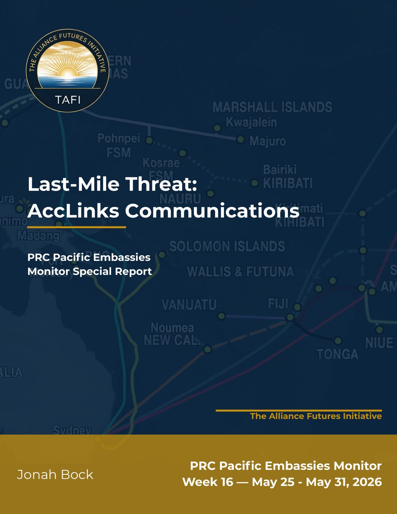

Last-Mile Threat: How AccLinks Embeds High-Risk Hardware in Pacific Island Telecommunications
AccLinks Communications Inc. poses a direct espionage threat to data transiting Western-funded subsea cables in the Pacific Islands. The Shenzhen-based firm operates as a business-to-business (B2B) systems integrator, managing the “last-mile” infrastructure that connects local telecommunications networks through subsidiaries such as OceanLink. By controlling this link, AccLinks gates data flows between secure cables and local users, embedding hardware from ZTE and Baicells, both identified as US national security threats, into the regional telecom infrastructure.
Key Findings
- AccLinks’ integration role creates a structural vulnerability. Western governments and multilateral institutions fund secure subsea cables to the Pacific Islands, but AccLinks controls the local infrastructure that carries data from to end users. This arrangement allows Chinese-origin hardware from sanctioned entities to intercept or monitor data that Western-funded cables were designed to protect.
- AccLinks has established a footprint across four Pacific Island states. The firm is embedded in Kiribati’s mobile telecommunications network and previously operated within Nauru’s telecommunications and government IT systems. AccLinks has completed a network construction contract in the Federated States of Micronesia (FSM) and may have a presence in the Marshall Islands.
- The company’s corporate history raises red flags. A Chinese-language recruitment site lists AccLinks as established in 2011. Panama Papers records show the company registered in the British Virgin Islands in 2005. AccLinks’ own website claims operations dating to 2003. CTO Liang Liyong appears across all three registrations, linking them to a single entity despite the conflicting timelines.
Corporate Profile
AccLinks (深圳市立华信技术有限公司) is a B2B intermediary for Chinese telecommunications services in the Pacific Islands.
- Leadership: CEO Zhang Huafeng is the public face of AccLinks, while CTO Liang Liyong manages technical integration.
- Corporate registration discrepancies: The company has three different founding dates across three sources: 2003 (company website), 2005 (Panama Papers), and 2011 (Chinese-language website). Liang Liyong’s name appears in all three records, confirming the listings refer to the same entity. The discrepancies plausibly reveal deliberate obfuscation of the firm’s origins and corporate structure.
Regional Operations
Kiribati
- AccLinks maintains deep structural integration into Kiribati’s digital infrastructure through its subsidiary OceanLink, which serves as the primary alternative to Vodafone Kiribati. OceanLink operates retail storefronts selling data plans and hardware, primarily sourced from Tecno (Hong Kong).
- OceanLink’s technical partnerships pose a direct security concern. The subsidiary partners with Baicells—under FBI investigation for security risks and designated a “Chinese military company” by the Pentagon. OceanLink also uses Hong Kong-based IPLook’s Evolved Packet Core (EPC) to manage its 4G LTE services, creating a centralized point for potential data mirroring.
- Through IPLook, OceanLink is plausibly connected to Western-funded subsea cable landing points to provide last-mile service. This integration raises the risk of hardware taps that could allow Beijing to intercept data transiting through the FSM, Nauru, and Kiribati.
Federated States of Micronesia (FSM)
- In 2013, AccLinks won a $4 million contract for 3G/4G expansion using ZTE equipment—The US Federal Communications Commission (FCC) designates ZTE as a national security threat. The age of the contract makes the current operational footprint difficult to verify, but ZTE-integrated last-mile infrastructure may carry data from the East Micronesia Cable.
- AccLinks CEO Zhang Huafeng met with FSM Vice President Palik during a visit to China in April 2025 to discuss potential partnerships—suggesting the firm seeks to expand beyond its legacy contract.
Nauru
- AccLinks previously operated in Nauru’s telecommunications sector, including a 2017 joint venture with CenPac for government networks and the launch of PacCell as a commercial carrier. Both initiatives appear defunct as of 2026.
- The firm has since pivoted into Nauru’s phosphate industry despite holding no public-facing expertise in heavy machinery or mining. AccLinks is involved in the Cantilever North Arm shipping project and has supplied intelligent sorting machines.
- Over the past year, CEO Zhang Huafeng has held seven meetings and signed two agreements with Nauruan ministers. In one meeting with Minister Bernicke, Zhang was photographed holding a folder labeled “NPRT (Nauru Phosphate Royalties Trust) Budget 2024.” During Prime Minister Adeang’s delegation visit to China, Zhang met with the Deputy ICT Minister and current RONPHOS Minister.
Other Countries
AccLinks maintains a lighter but expanding presence beyond its core markets:
- In the Solomon Islands, AccLinks partnered with Our Telekom to donate lightboxes to the National Referral Hospital, an engagement with no apparent telecommunications footprint.
- In the Marshall Islands, a report by Black Ops Partners identifies an AccLinks “distribution center” that is strategically positioned for physical or technical access to submarine cable landing points.
- OceanLink met with the Governor-General of Tuvalu during a visit to Kiribati. An associated photograph shows a slide deck titled “Why Choose OceanLink,” suggesting the firm is pitching expansion into new Pacific Island markets.
Key Threat Assessment
- AccLinks obscures high-risk Chinese hardware behind a “neutral” intermediary brand — and the threat extends to Western-funded subsea cables. AccLinks integrates products from ZTE (an FCC-designated national security threat) and Baicells (a Pentagon-designated “Chinese military company” under FBI investigation). By acting as the on-the-ground service provider, AccLinks masks the direct involvement of these entities. Through IPLook’s Evolved Packet Core in Kiribati, AccLinks’ subsidiary OceanLink plausibly connects to the East Micronesia Cable’s landing points, creating a pathway for data interception. Under China’s National Security Law, Beijing can compel AccLinks to surrender data to Beijing on request.
- AccLinks’ expansion beyond telecommunications into Nauru’s phosphate sector signals a broadening influence strategy that extends beyond data access. Zhang Huafeng’s ministerial meetings and signed agreements in Nauru, combined with potential access to the NPRT budget document and involvement in phosphate shipping infrastructure, suggest AccLinks is building political and economic influence beyond its original telecommunications mandate. The firm’s lack of mining or heavy machinery expertise makes this pivot analytically notable.
- AccLinks’ claimed resale of US cybersecurity products from Fortinet warrants regulatory review. AccLinks’ website claims to resell products from the US cybersecurity firm Fortinet. Given the firm’s integration of hardware from designated national security threats and its obligations under Chinese law, adding AccLinks to the Export Administration Regulations (EAR) entity list merits exploration. Continued access to US-origin cybersecurity tools by a firm embedding Chinese military-linked hardware in Pacific Island infrastructure represents a policy contradiction.
* The PRC Pacific Embassies Monitor provides systematic, open-source tracking of Beijing’s public diplomatic activities across the nine Pacific Island Countries hosting Chinese missions. This Special Report extends the series with deeper analytical work on a single regional threat actor.
Disclaimer: This report is the product of a hypothetical Red Team simulation by The Alliance Futures Initiative; findings represent adversarial role-play rather than official policy or predictions.
Photo Credit: International undersea internet cables for Pacific Island countries. Dr Amanda H A Watson and CartoGIS ANU.